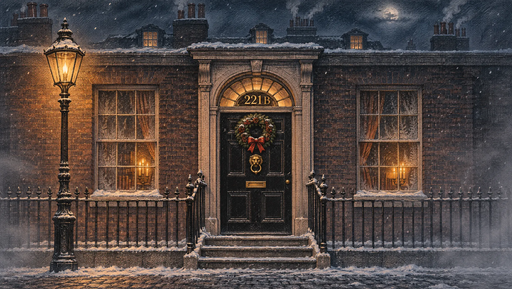

Arraste uma miniatura, ou use as setas para escolher, Espaço para pegar e soltar e Enter para abrir. Alt + setas move direto. Esc fecha.
A ordem que você escolher fica guardada neste navegador. O quiz é opcional: só abre pelo botão Quiz.
Aponte a câmera do celular para o código. A página que abrir tem os botões de avançar e voltar. Pode fechar este quadro: o celular continua ligado.
Ligando…
O celular ainda não alcança esta página: ela está aberta só neste computador. Publique a pasta e cole aqui o endereço público dela:

FlashClip · Edição de Natal
Londres, Baker Street, 221B. Véspera de Natal.